An artist must regulate his life.
Here is a time-table of my daily acts.
I rise at 7.18; am inspired from 10.23 to 11.47.
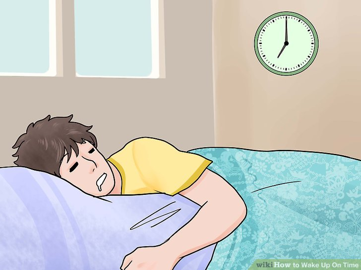
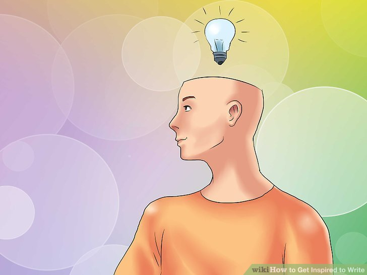
I lunch at 12.11 and leave the table at 12.14.
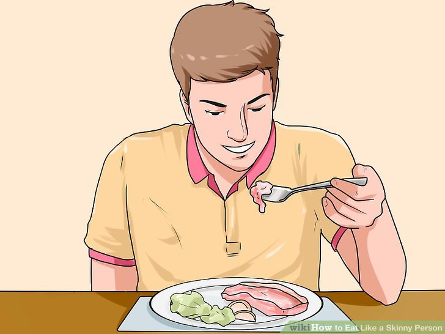
A healthy ride on horse-back round my domain follows from 1.19 pm to 2.53 pm.
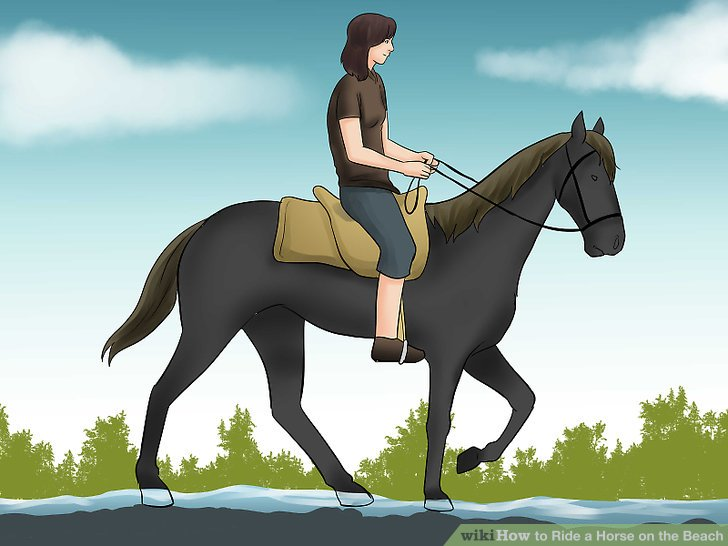
Another bout of inspiration from 3.12 to 4.17 pm.
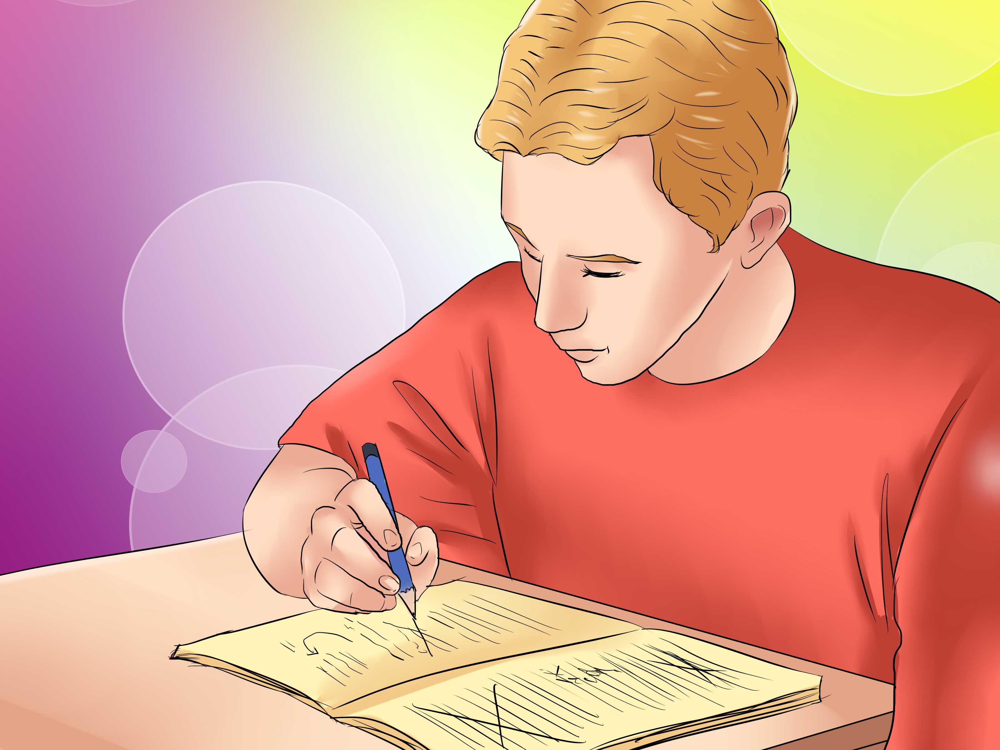
From 5 to 6.47 pm various occupations (fencing, reflection, immobility, visits, contemplation, dexterity, natation, etc.)
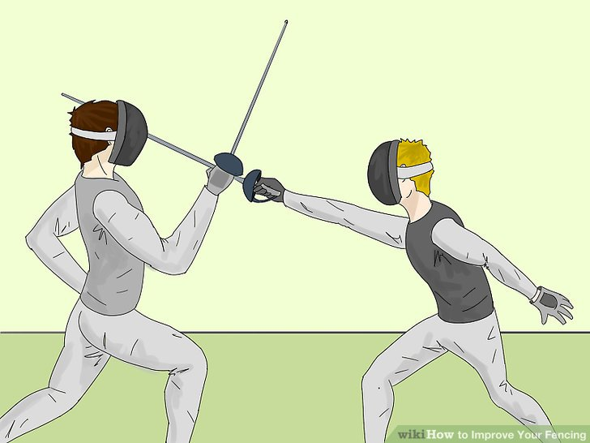
Dinner is served at 7.16 and finished at 7.20 pm.
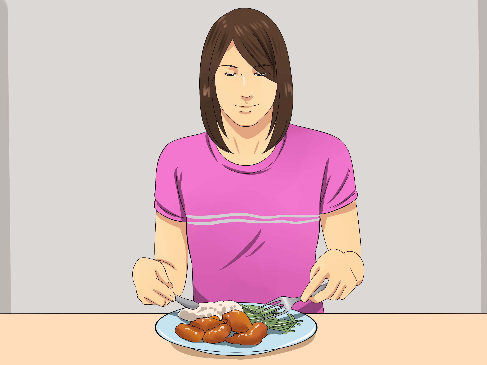
From 8.19pm to 9.59pm symphonic readings (out loud).
I go to bed regularly at 10.37 pm.
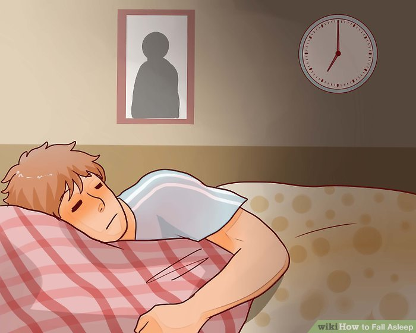
Once a week (on Tuesdays) I awake with a start at 3.14 am.
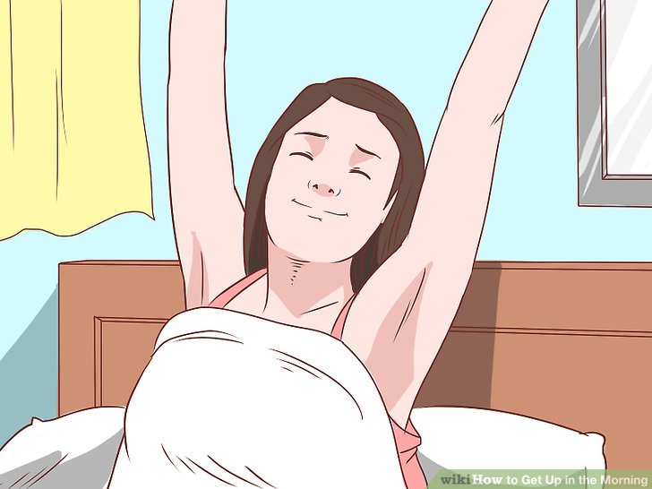
My only nourishment consists of food that is white: eggs, sugar, shredded bones, the fat of dead animals, veal, salt, coco-nuts, chicken cooked in white water, mouldy fruit, rice, turnips, sausages in camphor, pastry, cheese (white varieties), cotton salad, and certain kinds of fish (without their skin).
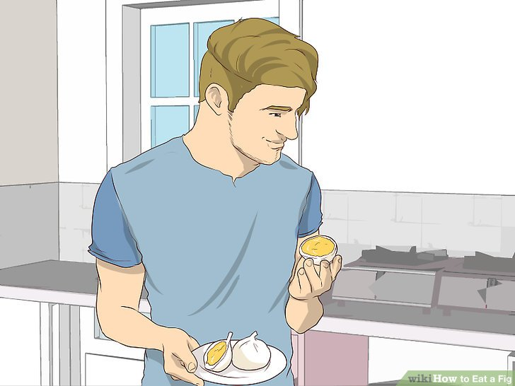
I boil my wine and drink it cold mixed with the juice of the Fuschia.
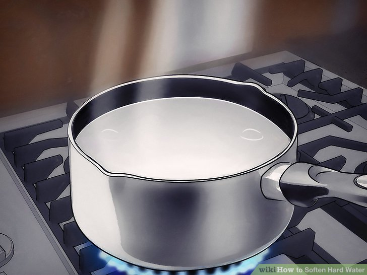
I have a good appetite but never talk when eating for fear of strangling myself.
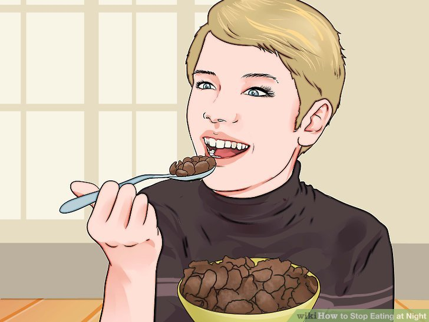
I breathe carefully (a little at a time) and dance very rarely. When walking I hold my ribs and look steadily behind me.
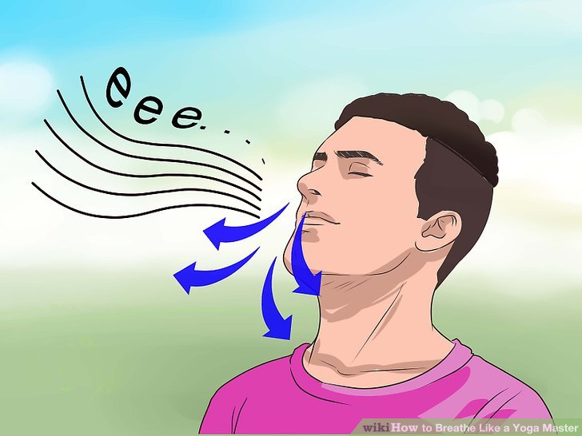
My expression is very serious; when I laugh it is unintentional, and I always apologise very politely.
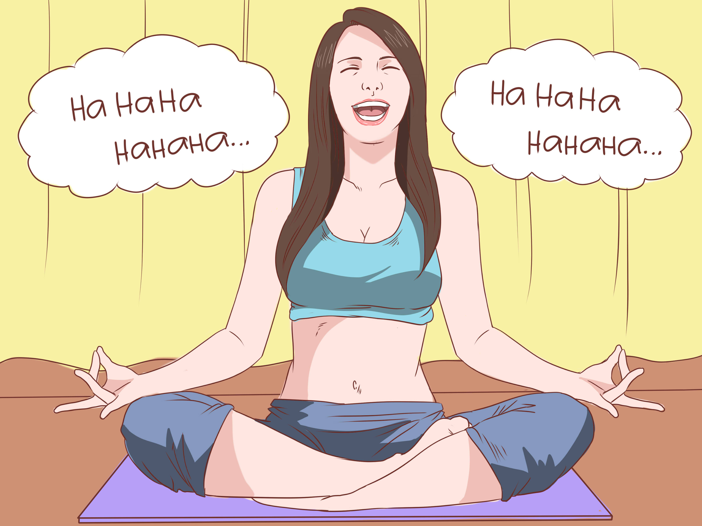
I sleep with only one eye closed, very profoundly. My bed is round with a hole in it for my head to go through. Every hour a servant takes my temperature and gives me another.